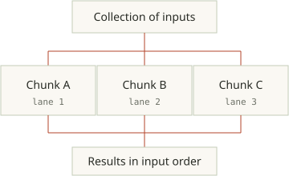
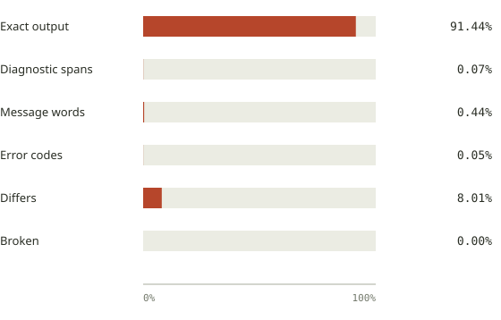
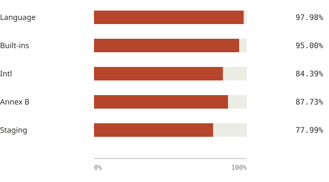

Bare-metal native.
Your program compiles to machine code through C. The executable runs without a JavaScript engine, V8 virtual machine or bundled runtime.
Zero Node.js runtime. Zero V8 engine overhead. kiln compiles your TypeScript and JavaScript directly to native machine code—with 6.55ms CLI startup, 26–33 MB server memory, and checked multicore parallelism.
macOS Apple Silicon Linux x86_64
function sum(values: number[]): number {
return values.reduce(
(total, value) => total + value,
0,
);
}
// Compiles to standalone machine code — zero V8, zero Node
console.log("Result:", sum([8, 13, 21]));$ kiln check hello.tsInstant type verification and parallel safety analysis before running or compiling.
Your program compiles to machine code through C. The executable runs without a JavaScript engine, V8 virtual machine or bundled runtime.
Use kiln run for immediate bytecode execution while coding. Build a standalone binary when you are ready to test, benchmark or ship.
Distribute pure work across all CPU cores. High-performance Tokio and Hyper networking power familiar node:* modules.
Keep the TypeScript and JavaScript ecosystem you know, with kiln extensions for CPU work, concurrent state and moving data between realms.
Start with the problem you have. The extensions offer different ways to package programs, distribute work and manage ownership.
| Your goal | Start here | What to check |
|---|---|---|
| Ship a CLI or service as an executable | Native build of the same JS or TS source | Target OS/architecture, required APIs and build-time module discovery. |
| Process a large collection with independent callbacks | Parallel collection methods | Callback eligibility and enough work to pay for scheduling; small jobs stay inline. |
| Give concurrent tasks a clear owner for state | Actors with bounded mailboxes | Capacity, lifecycle and behavior when methods await. |
| Avoid repeated copies between actors | Immutable sharing or ownership transfer | Supported graphs, preparation costs and sender detachment on transfer. |
| Run tools and cancel work cleanly | Typed subprocess helpers | Collected output, exit status and cancellation behavior. |
| Build a native interface in TypeScript and JSX | Reactive GUI APIs | Apple Silicon macOS provider support; Linux archives do not include a GUI provider. |
| Use more cores for an HTTP service | Server workers | Request mix, CPU budget, shutdown and measured scaling on your machine. |
Try your actual program in both execution modes. A type annotation or native binary alone does not guarantee faster execution.
Language and Node compatibility ↗Design and semantics ↗Report an unsupported API ↗
kiln analyzes your program, emits C, and uses a C compiler to produce a native executable for your operating system and architecture.
Type facts guide native code generation. Specialized fast paths have runtime guards and generic fallbacks for values that do not fit their assumptions.
Content-addressed caches reuse compiler and native artifacts. The first build prepares the built-ins; later builds can reuse those artifacts instead of starting over.
In the shared Linux x86_64 suite, Node spends 57.95ms booting V8 and loading modules. A kiln native binary spawns, runs and exits in 6.55ms—nearly 9× faster.
Deploy standalone binaries without bundling a 70MB+ JS runtime or shipping a node_modules tree to production.
FROM node:26-alpine
WORKDIR /app
COPY . .
RUN npm ci --omit=dev
# Ships V8 + node_modules
CMD ["node", "dist/app.js"]FROM gcr.io/distroless/cc
# Single native binary
COPY ./my-service /
# Zero JS engine or npm tree
ENTRYPOINT ["/my-service"]The same tool also includes a bytecode interpreter for immediate execution. Explore the design
Transform and filter data with familiar callbacks. A native binary can distribute eligible work across CPU cores, without a separate worker implementation.
Good for substantial, independent work on collections: numerical transforms, object projections and filtering large datasets.
The interpreter runs these methods sequentially. Native execution uses workers when the compiler proves the callback has no observable side effects and the workload is large enough to benefit. Otherwise the sequential definition runs.
Small examples like this one usually stay inline. Getters, I/O, clock reads, random state and unproven calls can prevent parallel execution.
Full collection semanticstype Row = { quantity: number; price: number };
const rows: Row[] = [
{ quantity: 3, price: 40 },
{ quantity: 2, price: 80 },
{ quantity: 1, price: 15 },
];
const totals: number[] = rows.parallelMap(row => row.quantity * row.price);
console.log(totals.parallelFilter(total => total > 100)); // [120, 160]
Scheduler lane counts depend on your CPU budget. This is a data-flow diagram, not a speedup measurement.
kiln check --explain-parallel parallel.ts reports the decision for each call site and the source location of any blocker. A runtime guard or a small input can still keep a call sequential.
Arrays support parallelMap, parallelFilter, parallelFlatMap, parallelReduce and parallelSort. Typed arrays support the same methods except parallelFlatMap.
parallelReduce uses a fixed reduction tree rather than the left-to-right tree of reduce. Both engines use that fixed tree; core count does not change its floating-point answer.
parallel.ts:7:15 [call: parallelMap]
↳ ✓ Pure callback proved: no heap mutations, no global state
↳ ✓ Thread-safe partitioning: 3 chunks across 8 worker lanes
↳ ✓ Reduction tree: deterministic floating-point consistency
↳ Decision: COMPILED MULTICORE PATHAn actor runs its module in an isolated realm, with its own JavaScript state. Call it asynchronously through a reference instead of sharing mutable objects across threads.
Use actors to give a task or application component a clear owner for its state. Bounded mailboxes give incoming work a capacity limit.
ActorRef<Counter> checks method names, arguments and awaited return types. Calls from one reference enter the mailbox in order. When a method awaits, another call can run a synchronous segment. The owner controls shutdown; stop() drains accepted calls.
Native actors share scheduler lanes, so each actor does not need its own OS thread. Actors still have bootstrap and memory costs; measure your application’s capacity. An actor’s synchronous Atomics.wait is refused; use messages for coordination.
import { Actor } from 'kiln:actors';
export class Counter extends Actor {
private count: number;
constructor(start: number) {
super();
this.count = start;
}
increment(delta: number): number {
return (this.count += delta);
}
readOwner(record: { readonly owner: string }): string {
return record.owner;
}
}import { spawnActor } from 'kiln:actors';
import type { Counter } from './counter.ts';
const owner = await spawnActor<Counter>({
module: new URL('./counter.ts', import.meta.url),
export: 'Counter', args: [0], mailboxCapacity: 8,
});
try {
const count: number = await owner.ref.call('increment', [3]);
console.log(count); // 3
} finally {
await owner.stop();
}Save both files with package.json in one directory (the package declares ESM).kiln --node run main.tskiln --node run --native main.ts
Both print 3. --node enables the worker messaging adapter.
Use the core node:http API and compile a server. At launch, choose how many workers share the listener. You can keep the same artifact and adjust its CPU budget on the machine that runs it.
import { createServer } from 'node:http';
const server = createServer((_request, response) => {
response.end('Hello from kiln\n');
});
server.listen(3000);
process.on('SIGTERM', () => server.close(() => process.exit(0)));kiln build server.ts
KILN_WORKERS=auto ./serverProcess mode uses a supervisor to forward signals and wait for workers. Your SIGTERM handler can drain requests with server.close() before exiting.
KILN_WORKERS=4 selects four processes; auto uses the available CPU count. kiln build --workers=auto server.ts can record that default in the binary.
Optional KILN_WORKERS_MODE=thread keeps worker realms in one process and shares a listening socket. A crash takes down that process; process mode offers crash isolation.
KILN_PARALLELISM controls collection worker lanes. By default, workers share the available core budget, so every process does not take all the cores for its parallel callbacks.
Requests per second · higher is better
The small service reaches 60.3k requests/s with auto (16) workers: about 3× the one-worker result in this run.
Linux x86_64 · Ryzen 7 5800H · 2026-10-11. Ten client processes, on the same machine as the server. This is a separate run from the four-client runtime comparison below; the load generator shares the CPU cores.
| Workers | Hello world | Small service |
|---|---|---|
| 1 worker | 57.8k | 20.0k |
| 2 workers | 87.1k | 35.7k |
| 4 workers | 94.0k | 53.3k |
| auto (16) | 81.6k | 60.3k |
Startup, warm computation and HTTP traffic answer different questions. Choose a suite, inspect its scope, then reproduce the workload closest to your application.
A suite’s date describes the measurement, not when its result was added to this page. Different suites use different compiler builds and timing methods.
Explore all 22 repository microbenchmarks, from numerical loops to objects, JSON and I/O. These measure warm execution, with startup and compilation excluded.
Measured on Linux on 4 October 2026, using the compiler validated at e872e3a0. Later changes are listed below; they are separate experiments and have not been merged into this complete-suite table.
Milliseconds per workload iteration · lower is better
Native takes 1.92× Bun’s time on this workload in the October 4 snapshot.
Each workload does a different amount of work. Compare runtimes within a row; milliseconds across different rows are not a ranking of tasks.
Values are medians of three process samples, with JIT warmup and calibrated batches. Module setup is outside the timed workload. No builds or tests ran during measurement.
The full table includes the interpreter, measured externally because its virtual clock cannot time synchronous work. It favors immediate execution and reproducibility; native is the deployment path.
The two parallelMap workloads use a sequential map fallback on Node and Bun. They do not establish universal parallel speedup.
These are JavaScript workloads. They do not establish TypeScript specialization benefits, application throughput, or whole-suite Effect performance.
Explore HTTP and memory measurements ↓Warm milliseconds per iteration. Native/Bun is elapsed-time ratio: below 1 means native is faster; above 1 means slower.
| Workload | Node ms | Bun ms | Native ms | Interpreter ms | Native/Bun |
|---|---|---|---|---|---|
| cpu/collatz.mjs | 478 | 421 | 192 | 2.178e+04 | 0.46× |
| cpu/fib.mjs | 36 | 23.75 | 54 | 5777 | 2.27× |
| cpu/frame.mjs | 0.0003204 | 0.0002594 | 0.0047 | 2.511 | 18.12× |
| cpu/loop.mjs | 54 | 53 | 46 | 2.356e+04 | 0.87× |
| cpu/mandelbrot.mjs | 17.25 | 17.75 | 17.5 | 1.097e+04 | 0.99× |
| cpu/nbody.mjs | 492 | 479 | 540 | 1.186e+05 | 1.13× |
| non-io/array-functional.mjs | 8.375 | 1.719 | 1.875 | 563 | 1.09× |
| non-io/array-sort.mjs | 3.375 | 3.125 | 3 | 113.2 | 0.96× |
| non-io/class-poly.mjs | 1.078 | 1.078 | 30 | 1269 | 27.83× |
| non-io/collections.mjs | 4.375 | 3.5 | 8.25 | 428.3 | 2.36× |
| non-io/json.mjs | 55 | 37 | 71 | 857.4 | 1.92× |
| non-io/multicore-parallel.mjs | 0.8438 | 0.1621 | 0.1719 | 71.39 | 1.06× |
| non-io/object-literal.mjs | 0.01904 | 0.0188 | 5 | 72.04 | 265.97× |
| non-io/object-spread.mjs | 0.7656 | 0.9219 | 0.2227 | 226 | 0.24× |
| non-io/parallel-map-large.mjs | 146 | 70 | 355 | 1.188e+04 | 5.07× |
| non-io/property-miss.mjs | 0.04199 | 0.05176 | 0.7734 | 143.3 | 14.94× |
| non-io/regex.mjs | 6.25 | 0.5469 | 7.75 | 161.1 | 14.17× |
| non-io/string-ops.mjs | 13.25 | 7.25 | 18.75 | 636.5 | 2.59× |
| non-io/timer-create.mjs | 2.438 | 1.75 | 5.062 | 41.47 | 2.89× |
| io/buffer.mjs | 10 | 6.125 | 1133 | 4.148e+04 | 184.98× |
| io/fs-promises.mjs | 11 | 5.375 | 4.562 | 37.39 | 0.85× |
| io/microtasks.mjs | 0.75 | 0.625 | 1.594 | 45.1 | 2.55× |
A separate paired repair reduced native time from 1,162 ms to 28 ms, versus Bun’s 6.125 ms. It remains 4.57× slower in that experiment.
Paired result and validation ↗A separate paired repair reduced native time from 5.06 ms to 4.44 ms. Bun took 0.0188 ms; allocation remains a substantial optimization target.
Paired result and validation ↗Full measurement record ↗Reproduce with mise run bench ↗Raw data and digests ↓JSON comparison SVG ↓
These published server measurements are an October 11 snapshot. Compare the actual workload you care about; later HTTP fixes are not included in this table.
Thousands of requests per second · higher is better
A hello-world HTTP response, with no request body.
kiln leads this hello-world workload. This result does not extend to every kind of request.
Peak resident memory · lower is better
Range across the measured server workloads. Shaded bar ends show the range; the bar ends at its maximum.
kiln uses less resident memory in these measurements. Binary size, build time and memory for your application are separate questions.
Linux x86_64 on an AMD Ryzen 7 5800H with 8 cores, on . Keep-alive HTTP, four client processes with sixteen connections each; median of three interleaved passes. Every response was checked.
One kiln realm is compared against Bun 1.4.2, Node 26.8.1 and Deno 2.9.7, which may use multiple threads. The small service includes routing, query parsing, JSON, a POST body, an 8 KB response, headers and an async timer.
kiln leads the hello-world workload here, and uses less memory. Bun, Node and Deno are faster on the small service and JSON echo. Request-body delivery through generic compiled Readable code is a current bottleneck.
These are measurements from one machine on one date, not a promise about all JavaScript. Worker scaling above uses a different client count and should not be compared directly against this chart.
| Runtime | Hello world | Small service | 1 KB JSON echo | Peak RSS |
|---|---|---|---|---|
| kiln native | 65.7k | 23.5k | 12.7k | 26–33 MB |
| Bun · 1.4.2 | 60.6k | 48.4k | 36.7k | 63–65 MB |
| Node · 26.8.1 | 45.6k | 32.3k | 26.5k | 87 MB |
| Deno · 2.9.7 | 43.9k | 30.5k | 37.0k | 153–155 MB |
Published measurement record Reproduce the benchmark Throughput SVG ↓Memory SVG ↓Scaling SVG ↓Download the data
Committed reference results for v0.1.0. TypeScript checker compatibility and ECMAScript runtime conformance answer different questions; both deserve visible evidence.
Compiler and conformance cases · exact and partial matches

| Highest matching level | Cases | Share |
|---|---|---|
| Exact output | 11,980 | 91.44% |
| Diagnostic spans | 9 | 0.07% |
| Message words | 57 | 0.44% |
| Error codes | 6 | 0.05% |
| Differs | 1,049 | 8.01% |
| Broken | 0 | 0.00% |
Recorded passing variants in orange, failures in gray · 0–100%

| Category | Passing | Failing | Chunks |
|---|---|---|---|
| Language | 43,264 | 894 | 28 |
| Built-ins | 44,948 | 2,367 | 64 |
| Intl | 5,629 | 1,041 | 19 |
| Annex B | 1,208 | 169 | 2 |
| Staging | 2,129 | 601 | 9 |
These are committed baselines, not a new complete-corpus run or a claim that every package works. Test262 counts here include recorded pass/fail outcomes; unsupported and skipped outcomes are not stored in this baseline. Routine gates defer the reviewed extended cases.
All 122 chunks and methodology →TypeScript 7.0.2 comparison →Download source data
npm package resolution and core Node APIs sit alongside kiln’s own typed modules for concurrency, subprocesses and native interfaces.
Small API smoke tests, not complete package test suites. This informational corpus runs separately from the release gate. The recorded result is for the development profile; it does not establish production-profile acceptance.
Zod, Effect, Express, Lodash, Prettier and @babel/core are among the pinned package smoke tests. Each test compiles to a native executable and compares its output byte for byte with Node.
kiln:actors gives state an owner. kiln:shared shares immutable graphs. kiln:process runs subprocesses with collected output and cancellation. kiln:gui builds reactive native interfaces with TypeScript and JSX on Apple Silicon macOS.
ESM and CommonJS packages use Node-style resolution. The Node layer is selected automatically for projects with package.json, tsconfig.json or node_modules. Runtime-selected modules need explicit native build inclusion.
Parallel collection methods let the compiler distribute proven independent callbacks. Kiln.serve offers a Request/Response HTTP handler, also exposed as Bun.serve.
Kiln compiles beyond CLI tools and servers. With kiln:gui, you can build native desktop interfaces using reactive signals and macOS AppKit controls. Instant window launch with zero Chromium or webview RAM bloat.
Compile and run with kiln run --native app.tsx on Apple Silicon macOS.
import { createSignal, runApp } from "kiln:gui";
function Counter() {
const [count, setCount] = createSignal(0);
return (
<window title="Counter" width={280} height={150}>
<text variant="largeTitle">{() => count()}</text>
<hstack>
<button onPress={() => setCount(c => c - 1)}>−</button>
<button variant="primary" onPress={() => setCount(c => c + 1)}>+</button>
</hstack>
</window>
);
}
runApp(<Counter />);kiln implements a substantial JavaScript and Node surface. It is an early runtime, so validate the behavior and packages your application needs.
ESM and CommonJS modules, classes and private fields, closures, generators, async functions and promises. Standard built-ins include Map, Set, typed arrays, JSON, regular expressions, BigInt, Temporal and Date.
kiln check hello.ts checks source types and reports diagnostics. Its pinned TypeScript 7.0.2 libraries and reference suites measure compatibility; type facts feed guarded native specialization. Checker architecture and compatibility results →
Use node:http, net, fs, events, stream, buffer, path, url and util. Tokio and Hyper provide the native scheduling and networking foundations.
Importing core node:* APIs selects the compatibility layer automatically. Actor examples explicitly use --node for worker messaging.
kiln run interprets immediately. kiln watch reruns an entry when you save. kiln check can explain parallelization decisions; native builds reuse cached artifacts.
Technical reference: checking, npm compatibility and built-in modules →
Test262 checks language behavior chunk by chunk. Native programs are compared with the interpreter. Real library bundles are checked against Node in both modes.
Unsupported native operations are intended to fail with a named cause and source location. Compatibility is evolving; these checks are evidence of tested cases, not universal package support.
kiln extensions are optional. KILN_EXTENSIONS=0 omits them while running; kiln build --no-kiln-extensions fixes that surface for a native build.
Install kiln, save the example above as hello.ts, and choose your workflow.
curl -fsSL https://github.com/sunfall-labs/kiln/releases/latest/download/install.sh | shToday’s “compile TypeScript to a binary” tools fall into two camps: single-file VM bundlers that attach your source code to a 60–100 MB runtime executable, or early AOT compilers that restrict dynamic JavaScript and node:* APIs. kiln takes a third path.
Concatenate your JavaScript bundle onto a copy of V8 or JavaScriptCore. Easy to package, but every binary still ships and boots a full JIT virtual machine at runtime.
Compile ahead of time without a VM, but trade away dynamic ECMAScript corners, direct TypeScript checking, or Node host APIs required by real npm libraries.
Effect, semver, or node:fs / BufferWhole-program type and flow facts emit specialized C99 fast paths guarded by runtime checks and backed by complete ECMAScript and Tokio/Hyper node:* fallbacks.
undefinedAll six runtimes receive the exact same 24 compatibility probes and 5 workloads on Linux x86_64 (AMD Ryzen 7 5800H). Node v26.8.1 is the output oracle; wrong answers are excluded from speed rankings.
| Runtime | Architecture | Language (14) | Node Host (6) | Bundled npm (4) | Total Probes | CLI Startup | Warm Numeric | Warm JSON |
|---|---|---|---|---|---|---|---|---|
| kiln native (v0.1.0) | Guarded AOT → C99 | 14 / 14 | 6 / 6 | 4 / 4 | 24 / 24 | 6.55 ms | 1.84 ms/call | 0.1807 ms/call |
| Perry (v0.5.1520) | Direct TS AOT | 14 / 14 | 6 / 6 | 2 / 4 (fails semver, effect) | 22 / 24 | 3.04 ms | wrong-output | 0.6172 ms/call |
| Static Hermes (shermes -O) | Untyped JS → C AOT | 11 / 14 | 3 / 6 | 3 / 4 (fails effect) | 17 / 24 | 5.01 ms | 2.81 ms/call | 0.0767 ms/call |
| Porffor (0.62.2 -O3) | JS/TS Subset → C | 7 / 14 | 3 / 6 | 2 / 4 (fails semver, effect) | 12 / 24 | 1.45 ms | 2.69 ms/call | 0.3223 ms/call |
| Bun (v1.4.2 reference) | JSC JIT VM | 14 / 14 | 6 / 6 | 4 / 4 | 24 / 24 | 4.47 ms | 0.1416 ms/call | 0.0437 ms/call |
| Node (v26.8.1 oracle) | V8 JIT VM | 14 / 14 | 6 / 6 | 4 / 4 | 24 / 24 | 57.95 ms | 0.0947 ms/call | 0.0566 ms/call |
Bundled npm probes test real lockfile builds of semver, lodash.get, zod and effect. In the 5,000-row table transform workload, Static Hermes (11.15 ms), Perry (14.88 ms) and kiln native (15.82 ms) all beat Node (71.97 ms), while Porffor produces wrong output.
All runtime comparisons →Shared benchmarks and compatibility matrix →
Start by running the entry and checking the APIs and packages it uses. kiln supports core Node APIs and both module systems, but it is not a universal drop-in replacement. A native build needs the modules it may load to be discoverable at build time.
For modules loaded by computed paths, declare them in the project’s package.json, for example {"kiln":{"include":["./src/worker-task.cjs"]}}. The compiler can then include the module and its dependencies.
Install kiln and have Clang, GCC, cc or Zig on your PATH. The release includes macOS Apple Silicon and Linux x86_64 (glibc) archives. Native builds target an operating system and architecture; one binary is not portable across all platforms.
The first native build prepares the built-ins and can take a minute or more. The interpreter does not need a C compiler.
No. Programs run with your user account’s authority, including the host operations they use, like Node. Actor realms isolate JavaScript state; they are not a security sandbox for untrusted programs.
The v0.1.0 GUI provider uses AppKit on Apple Silicon macOS, with typed reactive APIs and JSX. Linux releases omit the GUI provider. See the GUI example and platform requirements. A browser Wasm playground is being explored; it is not available on this page.
Linux arm64 binaries are planned for a follow-up release. The current 0.1.0 downloads support Linux x86_64 and macOS Apple Silicon. Check release notes for the platforms actually included before deploying.
v0.1.0 is kiln’s first release. Compatibility is still evolving: try your program, check its behavior, and tell us what breaks.
Language behavior is checked against Test262. Native output is compared with the interpreter, and real library bundles exercise both engines.
Release binaries are available for macOS Apple Silicon and Linux x86_64. Linux arm64 is a follow-up. Programs run with your user account’s permissions.